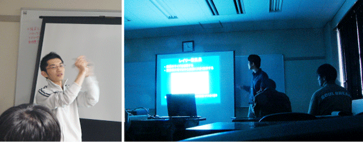
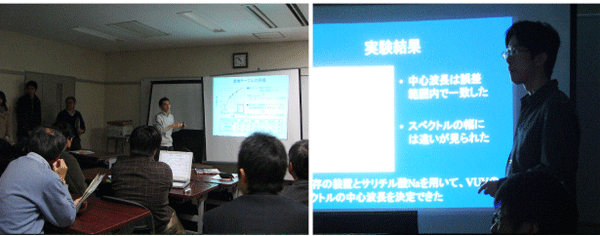
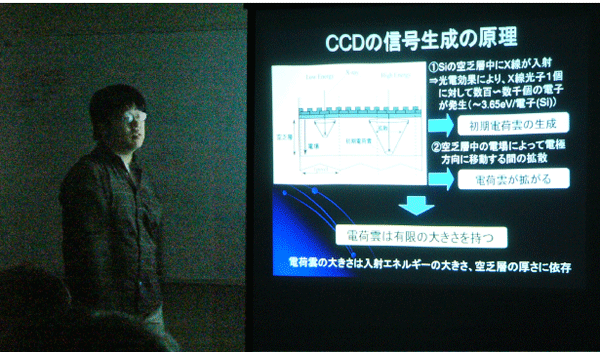

博士前期課程２年の３人の院生が修論発表会で発表（2007年2月）
博士前期課程２年の３人の院生が修論発表会で発表（2007年2月）
2月14日（水）に工学府物理情報工学専攻物理工学コースの修論発表会が開かれ，中村研の博士前期課程２年の ３人の院生が発表を行ないました。
発表のタイトルは次の通りです。
◎倉田 真吾「重イオンCTを用いたCT値−阻止能比変換テーブルの評価」
◎長瀬 達洋「キセノンシンチレータの発光スペクトルの研究」
|
2月14日（水）に工学府物理情報工学専攻物理工学コースの修論発表会が開かれ，中村研の博士前期課程２年の ３人の院生が発表を行ないました。 発表のタイトルは次の通りです。 |
|
◎尾崎 雄一「BP-1ガラスマルチコリメータを用いたX線CCDの電荷雲測定」 ◎倉田 真吾「重イオンCTを用いたCT値−阻止能比変換テーブルの評価」 ◎長瀬 達洋「キセノンシンチレータの発光スペクトルの研究」 |
|  |
|  |
|  |